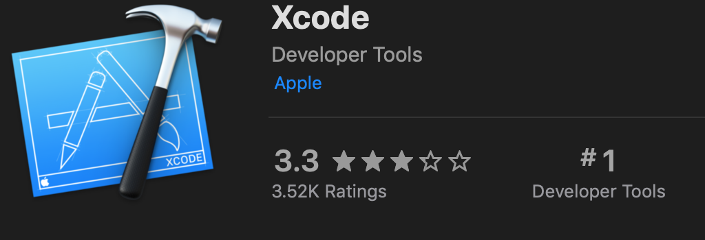
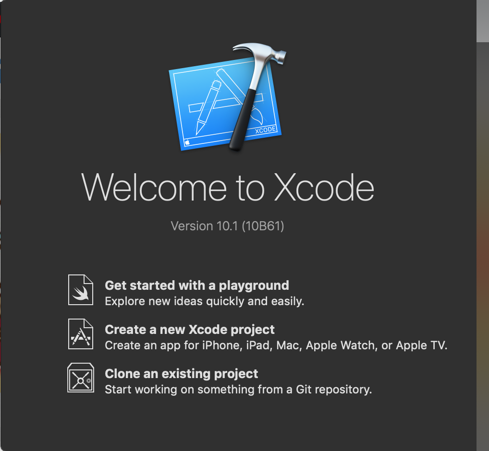
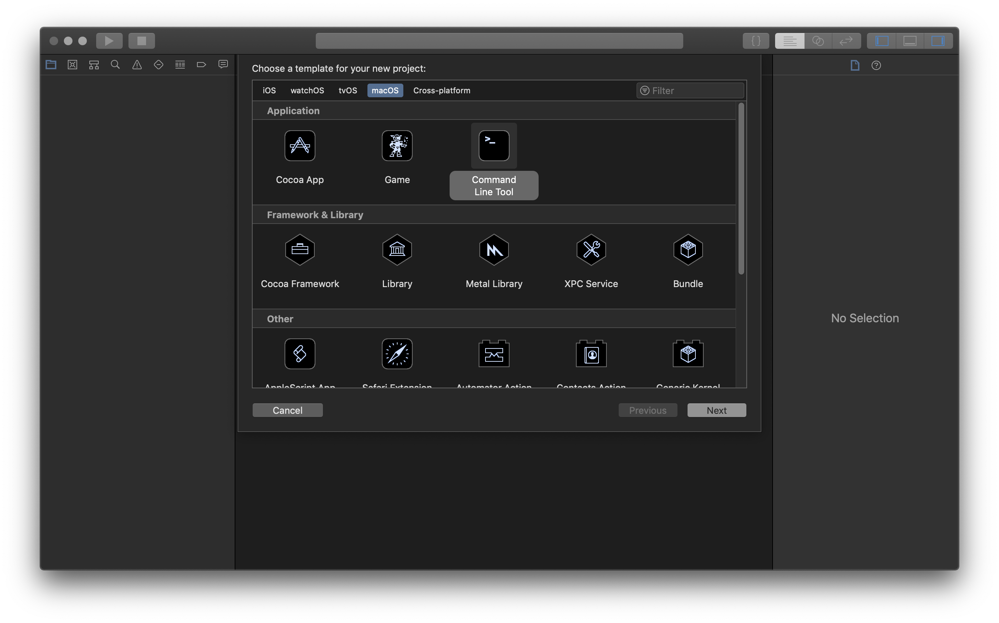
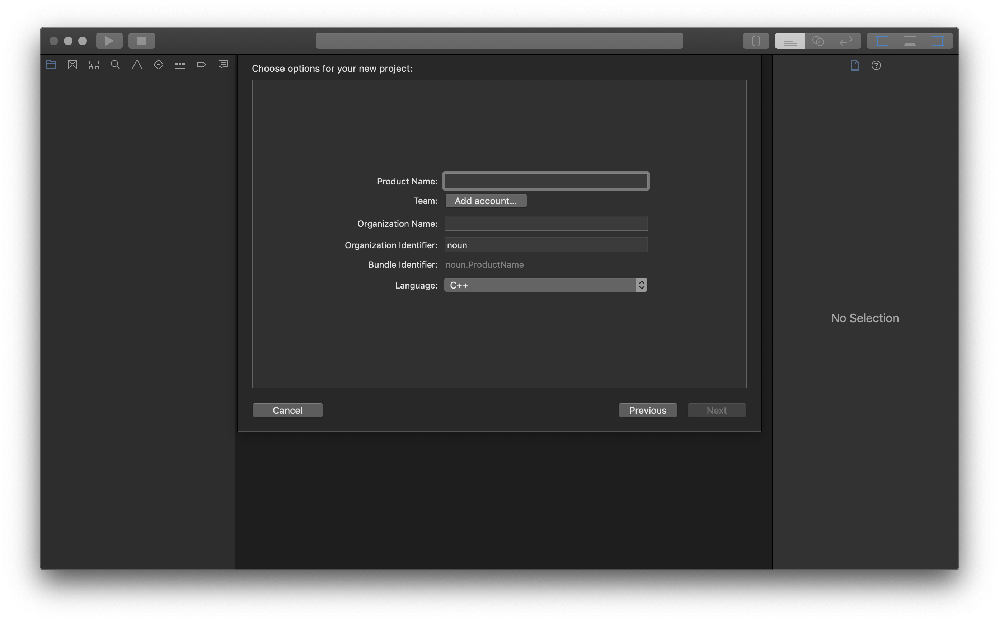
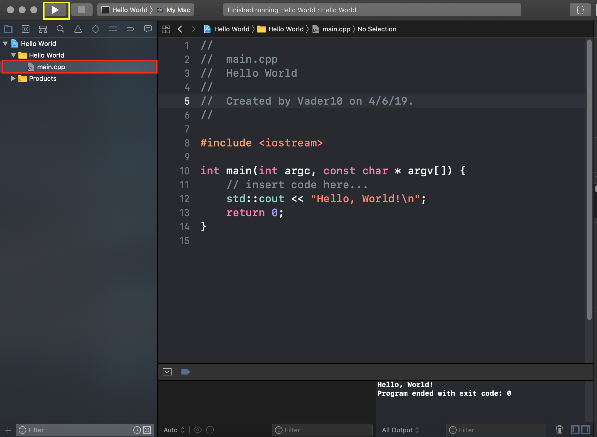
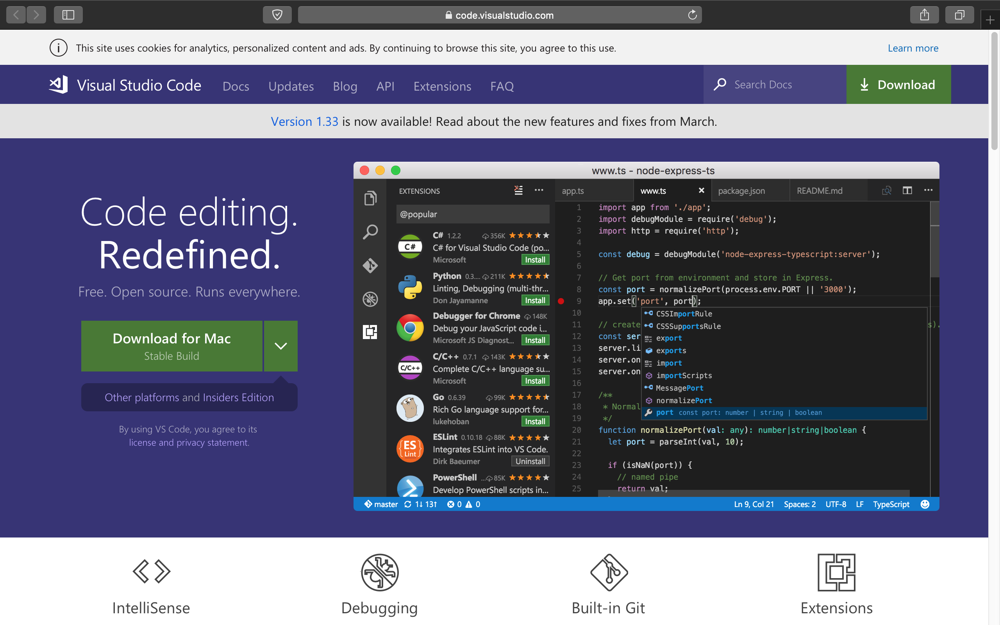
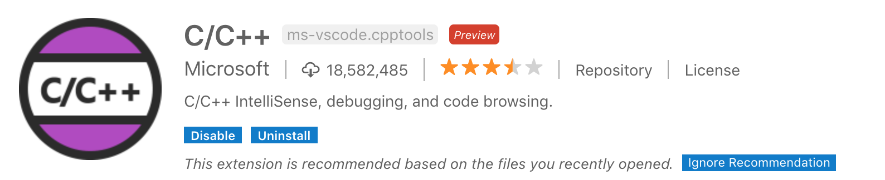
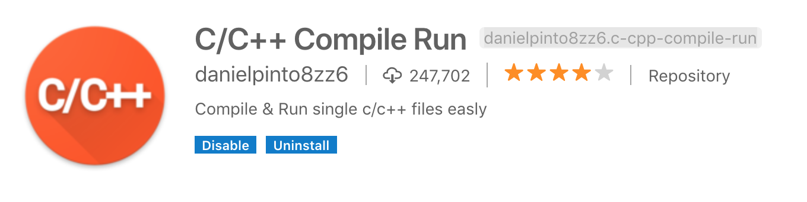

Go to the App Store, and search Xcode. Then, install it.
1.First, open Xcode. You will probably see a window like this:
If you don't see this window, then use the shortcut "Shift+Cmd+N" and skip to step 3.
2.Then, click on "Create a new Xcode project or use the shortcut "Shift+Cmd+N".
3. For the template, choose "MacOS" and then click on "Command Line Tool. Click on "Next".
4. Type in your project's name and choose "C++" in the language.
5. Click on "main.cpp"(The red rectangle) and start typing. When done, click "build and then run the current scheme" (The triangle in the yellow rectangle) to build and run your c++ code.
However, Xcode couldn't compile and run single .cpp files, and to do that, you can use Visual Studio Code.
1. First, go to https://code.visualstudio.com and download Visual Studio Code.
2. Then, use the shortcut "Shift+Cmd+X" and search the extensions "C/C++" and "C/C++ Compile Run" and install them.
 3. Finally, use the shortcut "Cmd+R" to create a new file and type your C++ code. When done, save the file(Don't forget to add the extension name .cpp) and then use the shortcut "Cmd+R" to compile and run it.
Number of the times this site was visited: